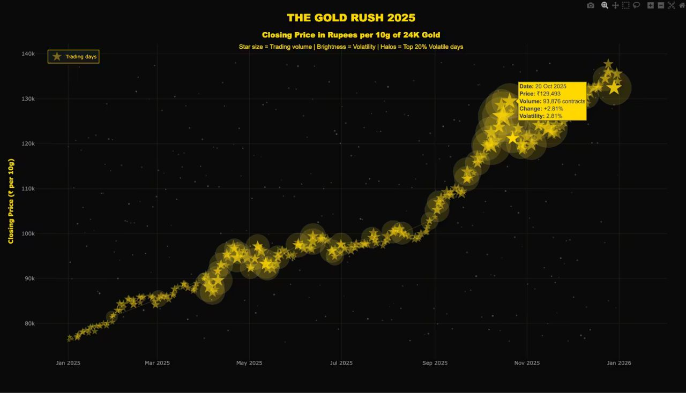

📝 PublishedPublished Author – The Golden Trilogy: From Standard to Stunning with Plotly
Invited to write for Plotly's own platform. The piece shows how the same dataset can be reshaped through different visual approaches, from precise and analytical to expressive and narrative-driven, revealing how visualisation choices themselves become a storytelling tool, published to Plotly's global audience of practitioners.
Read the article →